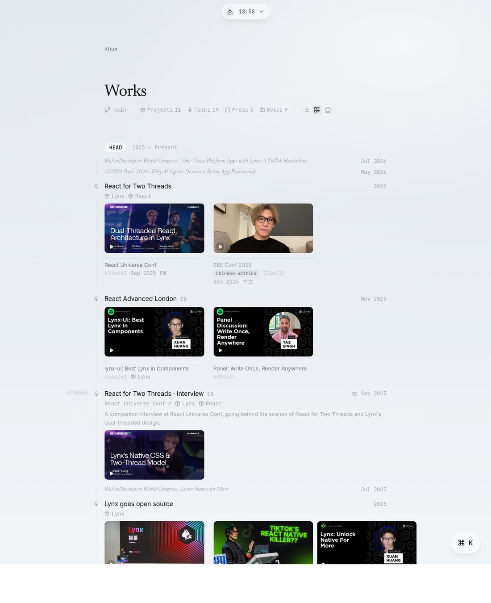

Works 只有一根轴（时间）和一种上下文（role → identity，rail 画出来的那条）。现实是一棵树加几条横边。这页先把关系拆清楚，再给五个方向，其中三个做成了可以点的原型，都用的是 log.json 里的真数据。最后是对比矩阵和我的倾向。
现在的 log 里，commit 之间只有两种结构：排序（时间）和归属（attachedTo / tenure 推断出的 role，rail 把它画出来）。但描述的现实至少有这样一棵树：
identity <jsx@fb.com> <@bytedance>
└─ role SWE @ Meta · Architect @ ByteDance (tenure, team)
└─ project / family React Compiler · Hermes · Lynx
├─ release / sub-project Lynx open source · lynx-ui · ReactLynx
└─ evidence talk · post · press · repo
└─ edition EN / 中文 · 重讲 · 续篇树里每一层之间是一种不同的关系。把它们分开命名，后面每个方向的取舍就清楚了：
| 关系 | 例子 | 现在 | PR 249 | git 里的对应物 |
|---|---|---|---|---|
| edition-of 同一件作品的另一个 dateline | Two Threads 的 EN/中文；Lynx 首发的 D2 / React Summit / WAD 重讲；世界观 → 前端已死 | 各自一行 | squash：成员 id 列表 + relations | [PATCH v2] re-roll、cherry-pick |
| about / evidence-of 作品是某个项目的证据 | React without memo → React Compiler；九个 talk → Lynx | attachedTo（单指针，本意给 role） | projects[]（多对多）+ 四个 register | branch 上的 commit；两个 parent 的 merge |
| part-of 子项目属于一个家族 | lynx-ui、ReactLynx ⊂ Lynx | 没有；用发布时的 talk 顶替 | 没有 | branch off a branch；submodule |
| milestone 一段时间里同一主题的几件事 | 2022 年的封面、主题演讲、33 人名单 | 各自一行 | squash china-react（作者要补 title / description） | annotated tag |
纵向太长的压力主要来自第三行：Lynx 是会持续发布的家族，每个 release 带着仓库、演讲、博客，而现在唯一能承载它们的单元是 talk commit。前两行是"已经发生的重复"，第三行是"会持续增长的结构"。一个方向解决哪几行，是判断它的第一把尺子。
两个机制：squash 把 peers 印成一行（header 只说共同点，band 里每个成员说自己的），projects[] 让 talk 像引用 role 一样引用 project（mark / peek / light / fields 四个 register）。

我认可的部分：不改写数据，成员保留 hash，per-locale 的因子化很严谨，"context 像 role 一样有四个 register"这个类比是对的。疑虑都是结构性的：
log-squash.ts 420 行 + squash-band.tsx 483 行 + 编辑器面板），只解决 edition-of。part-of（Lynx 家族）没有碰，而那才是纵向会持续变长的原因。lynx-open-source 和 china-react 都需要作者补 title 和 description，恰恰说明缺的是一个真正的 commit 来承载这个时刻。按 PR 自己的定义（"a squash is for peers"），它们不该是 squash，是 milestone。只处理 edition-of，而且只加一个字段：editionOf: <commitId>，可选 relation 标签。没有 group 实体，lead 是推导出来的。像邮件列表或论坛：thread 的位置由最新一条决定（"被顶上来"），header 是 canonical 那条（原版，或者当前 locale 的那一版），其它 edition 折成标题下面的一行 ↳ 2 editions，点开是每个 edition 的封面和 venue。
// commit 上加一个指针，不加集合
{ "id": "see-conf-2025-two-threads",
"editionOf": "react-universe-2025-two-threads",
"relation": { "en": "Chinese edition", "zh": "中文版" } }
// header 的选法（推导，不用作者写）：当前 locale 有 edition 就用它，否则用原版
// 行的位置：thread 里最新的 date；日期栏印区间 `Jun – Jul 2025`(cherry picked from …)、[PATCH v2]，读者一看就懂。relation 区分。把 git log --graph --first-parent 搬过来。每个 project 是一条 lane；关于它的 talk / post / press 是 lane 上的 commit；子项目（lynx-ui）是从 lane 上再分出去的 lane；同时关于两个项目的 talk（Two Threads）是有两个 parent 的 merge。项目行坐在它最近一次活动的位置（tip），而不是起点，所以 Lynx Framework 在 HEAD 顶上，日期栏仍然是 2023 – Present。默认 --first-parent：主线只印项目行加一句 ⎇ 11 commits on lynx；点开才展开 lane。lane 里的 edition 用 B 的 thread 折叠。release 是 lane 上的一个 tag: 装饰，和章节的 HEAD pill 同一套。
// PR 的 projects[] 换个更中性的名字，目标可以是任何 commit，于是天然成 DAG
{ "id": "react-advanced-2025-lynx-ui", "about": ["lynx-ui"] }
{ "id": "lynx-ui", "type": "project", "about": ["lynx-framework"], "date": "2025-11" }
{ "id": "react-universe-2025-two-threads", "about": ["lynx-framework", "react-core"] } // merge
// 项目行的位置：有 lane 的项目按 lane 上最新一条排（tip），日期栏照旧印区间
// 折叠是 form 的一部分：covers 折、feed 展、index 只印计数；?type=talk 时 lane 解散，talk 各自成行HEAD、hash、--pretty=fuller，再加 --first-parent 和 tag: 并不突兀。⎇ 11 commits · latest Jul 2026 这行是补偿，但"页面是一条时间线"的直觉被动了一点。不动布局，动内容的单位。在 Lynx 时期，一行是一个 milestone（开源、lynx-ui、下一次大版本），关于它的 talk / 博客 / 仓库是这一行的 attachment。media strip 已经会印封面，所以 talk 直接成了 strip 里的封面，caption 印 venue 和它自己的 hash。talk 仍是 commit（可寻址，?type=talk 时各自成行），只是默认折进它的 milestone。这正是你说的"用发布时的 talk 顶替子项目"的反转：让 release 成为 commit，让 talk 回到证据的位置。
// 作者新写两个 commit；talk 用 about 指回去，present 说"我是证据，默认折进去"
{ "id": "lynx-open-source", "type": "project", "date": "2025-03",
"title": { "en": "Lynx goes open source", "zh": "Lynx 开源" }, "about": ["lynx-framework"] }
{ "id": "d2-2025-lynx", "about": ["lynx-open-source"], "present": "evidence" }?type=talk 找回。兜底方案。about[] 和 editionOf 只作为 --pretty=fuller 块里的 trailer 印出来（Project: / Edition-of:），meta line 上留 PR 那个稀疏的 mark，再给 URL 加一个 ?about=lynx 过滤。压缩交给读者：想看 Lynx 就过滤，想短就 index form。诚实、便宜，但默认页面一行不会少。它是 B / C / D 任一方向的数据层，所以不单独做原型。
| A Squash + Context | B Threads | C Branches | D Releases | E Trailers | |
|---|---|---|---|---|---|
| 解决哪几种关系 | edition-of、about | edition-of | about、part-of、merge（+B 补 edition） | about、milestone | 标注全部，压缩零 |
| HEAD 行数（现在 15） | 11 | 11 | 5 折叠 / 12 展开 | 13（配 B 约 10） | 15 |
| Lynx 再发 3 个 release + 6 个 talk | +6 到 +9 行 | +6 行（重讲折掉） | 主线 +0，lane 变长 | +3 行 | +9 行 |
| 新增数据形状 | squashes[] 集合 + relations + projects[] + short | editionOf + relation | about[]（+ tip 排序） | about[] + present:evidence + 作者新写 commit | about[] + editionOf |
| 每行都是 commit | squash 行不是 | 是 | 是 | 是 | 是 |
| 时间线的诚实度 | 行在最新成员 | 行在最新 edition | 项目行在 tip，成员折在下面 | milestone 有自己的日期 | 不变 |
| Meta 两个 team | team 副标题 | team 副标题 | 各自一条 lane | team 副标题 | Team: trailer |
| 手机 | band 横向滚动 | 一行折叠 | 缩进，两层以内 | strip 已有 | 不变 |
| 编辑器 | squash 面板 + 因子化读数 | 一个 picker | toggle set（PR 已有） | 要新建 commit | toggle set |
| 实现量（估） | 已做，~3000 行 | 小 | 中：lane 渲染 + tip 排序 + 折叠 form | 小，主要是内容 | 很小 |
C 作机制，B 补 edition，D 作内容层面的决定。两个指针字段（about[]、editionOf），零个新集合。project 是 branch，talk 是 branch 上的 commit，edition 是 thread，release 是值得单独一个 commit 的时候才写一个 commit（它自然就是 lane 上的一个 tag）。PR 249 里四个 register 的思路保留给跨章节的引用（Two Threads → React Compiler），因为那里画不出 lane。
理由：这是唯一一个把成本花在会增长的那一行（part-of）上的方向，并且它把 role 的 rail 和 project 的 lane 统一成一种东西，而不是再加一种。
现在的做法（一个 identity，project 上挂 team 副标题）我认为是对的，不建议拆成多个 role：rail 画不了重叠的 tenure，而 Hermes 和 React Core 在时间上确实重叠。在 C 里，team 自然成为 lane 的属性（PLR @ Meta 那条、React Core team @ Meta 那条），谈论"我在哪个 team"就是谈论"哪条 lane"，identity 保持一个。
covers form 折 lane、feed 展开、index 只印 ⎇ 11 commits 计数。原型都在这一页里用 log.json 的真数据渲染，图片是各 talk 的真实封面。没有接真站的 hover peek、connector 和 form 切换，只做了关系和折叠。